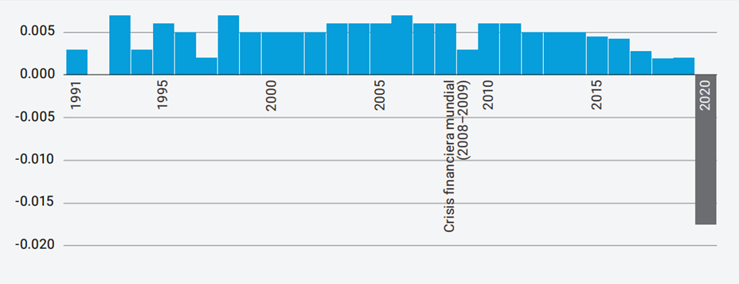
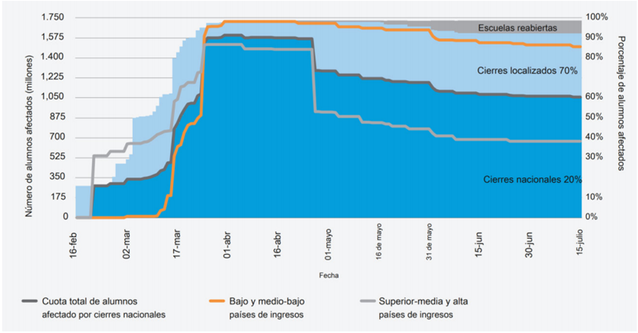
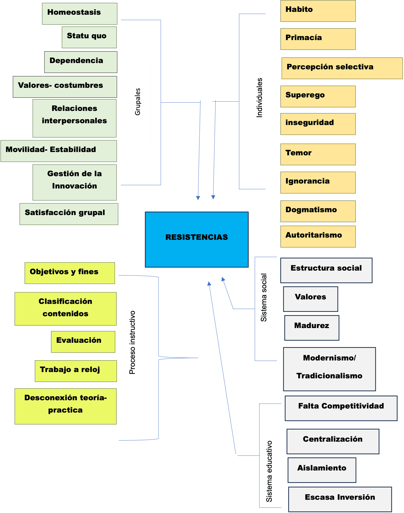
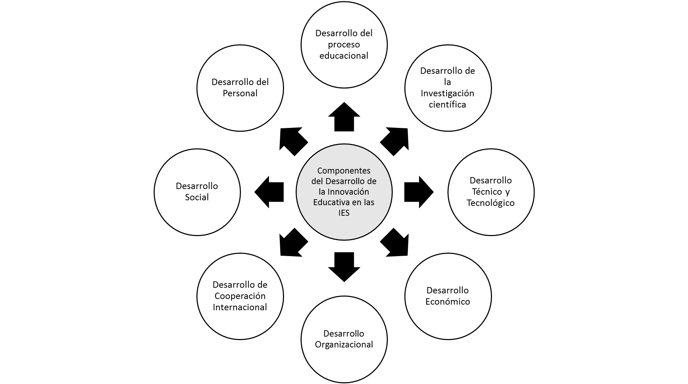

Resumen.
La pandemia de COVID-19 transformó de manera abrupta la educación superior, generando la necesidad de innovaciones urgentes para garantizar la continuidad académica. El paso acelerado hacia la enseñanza en línea, apoyada en plataformas virtuales y videoconferencias, evidenció tanto oportunidades como limitaciones del sistema educativo. Este estudio tiene como objetivo identificar los principales enfoques adoptados por las instituciones de educación superior en este proceso de adaptación, con énfasis en la incorporación de tecnologías educativas, la implementación de modelos híbridos, el fortalecimiento de competencias digitales, la colaboración internacional y la capacitación continua del profesorado. Se empleó un método cualitativo documental mediante la revisión de literatura especializada. Los resultados muestran que la emergencia sanitaria impulsó el uso generalizado de herramientas tecnológicas y subrayó la necesidad de inclusión digital. Se concluye que, aunque se lograron avances significativos, persisten desafíos vinculados con la equidad, la formación docente y la sostenibilidad de estas transformaciones.
Palabras clave:
era digital, educación superior, innovación educativa
Abstract.
The COVID-19 pandemic abruptly transformed higher education worldwide, creating an urgent need for innovation to ensure academic continuity. The accelerated shift to online teaching, supported by virtual platforms and videoconferencing, revealed both opportunities and limitations within the educational system. This study aims to identify the main approaches adopted by higher education institutions during this adaptation process, with a focus on the integration of educational technologies, the implementation of hybrid learning models, the strengthening of digital competencies, international collaboration, and continuous faculty training. A qualitative documentary method was applied through a review of specialized literature. Results indicate that the health crisis fostered the widespread use of technological tools and highlighted the critical importance of digital inclusion. It is concluded that, although considerable progress was achieved, challenges remain regarding equity in access, faculty development, and the long-term sustainability of these innovations.
Keywords:
digital age, higher education, educational innovation
Introducción
Vivimos en una era caracterizada por la acelerada evolución tecnológica, lo que ha generado múltiples fuentes de conocimiento y acceso a la información de forma más eficiente, simplificando tareas y facilitando la comunicación. En el contexto de la educación superior, la incorporación de plataformas digitales ha transformado profundamente las formas de enseñanza y aprendizaje, impactando directamente en el desarrollo de competencias clave en los estudiantes, no obstante, esta transición también ha evidenciado una serie de desafíos que deben ser superados para garantizar un acceso equitativo a la tecnología, entre ellos destacan la resistencia al cambio, el uso inadecuado de las Tecnologías de la Información y la Comunicación (TIC), y la incertidumbre generada en el ecosistema educativo, todos factores que influyen en la calidad de la transmisión del conocimiento entre docentes y estudiantes (Arriaga-Cárdenas & Lara-Magaña, 2023). La crisis sanitaria provocada por el COVID-19 aceleró la integración de las tecnologías digitales en todos los ámbitos de la vida cotidiana, si bien su incorporación en la educación ya era relevante, se volvió indispensable no solo para dar continuidad a los procesos de enseñanza-aprendizaje en entornos virtuales, sino también como un mecanismo de adaptación frente al confinamiento global. La Organización Mundial de la Salud (OMS) declaró el 11 de marzo de 2020 al brote de COVID-19 como una pandemia mundial (Cucinotta & Vanelli, 2020), a partir de entonces, el mundo enfrentó una de las crisis más severas de la historia reciente, marcada por el confinamiento obligatorio, el distanciamiento social y la interrupción de actividades presenciales a nivel global.
La pandemia afectó no solo la salud pública, sino también los ámbitos sociales y económicos, lo cual impulsó una profunda reorientación de valores y prioridades en múltiples sectores, en el caso de la educación superior, se generó la necesidad de adoptar modelos de aprendizaje flexibles, innovadores y adaptativos, capaces de asegurar la competitividad tanto a nivel nacional como internacional. En países como México y otros de América Latina, esta coyuntura aceleró el desarrollo e implementación de nuevas estrategias educativas, centradas en el uso intensivo de tecnologías que permitan el fortalecimiento de los sistemas educativos y su sostenibilidad a largo plazo.
Contextualización
La crisis sanitaria provocada por el COVID-19 interrumpió los sistemas educativos en todo el mundo, afectando a cerca de 1.6 mil millones de estudiantes en más de 190 países (UNESCO, 2020). El cierre de escuelas y otros espacios destinados al aprendizaje impactó al 94% de la población estudiantil global, ante esta situación, las instituciones educativas se vieron obligadas a implementar formas alternativas de enseñanza, desarrollando modelos virtuales e híbridos según las condiciones locales, lo que supuso nuevos retos para estudiantes, docentes e incluso para las familias.
Si bien la emergencia sanitaria abarcó múltiples dimensiones (sanitaria, económica y social), la crisis educativa se manifestó como una “crisis silenciosa”. Di Gropello (2020) advierte que sus consecuencias, aunque no siempre visibles de forma inmediata, pueden configurar un escenario desolador a mediano y largo plazo.La pandemia tuvo efectos estructurales en la economía y la educación, con impactos globales de largo alcance, uno de los efectos más significativos fue el cierre repentino de escuelas, el cual podría representar para la generación actual una pérdida acumulada de ingresos cercana a los 17 billones de dólares, lo que equivale al 14% del Producto Interno Bruto (PIB) mundial (UNESCO, 2021). Estos factores contribuyen al aumento del abandono escolar, intensificado por las crisis económicas globales y las interrupciones prolongadas en el acceso a la educación. Esta situación ha sido calificada como una catástrofe generacional (UNESCO, 2020), la virtualización de la enseñanza representó un desafío para estudiantes y docentes acostumbrados a un modelo presencial tradicional, esta transición repentina generó sentimientos de incertidumbre y ansiedad, al requerir nuevas habilidades y estrategias de enseñanza-aprendizaje.
Más allá del ámbito educativo, el impacto del COVID-19 se reflejó también en el desarrollo humano de las sociedades. Según el Informe sobre Desarrollo Humano 2020, como podemos observar en la figura 1, se registró una caída sin precedentes en el índice de desarrollo humano (IDH), evidenciando un retroceso en indicadores clave como la educación, la salud y los ingresos, este deterioro afectó de manera particular a personas en situación de pobreza extrema, incluidos millones de estudiantes en todos los niveles educativos.
Figura 1.
Variación anual del Índice de Desarrollo Humano, 2020

Nota. Programa de las Naciones Unidas para el Desarrollo [PNUD], 2020.
Según datos de la ONU, en su Programa de las Naciones Unidas para el Desarrollo (2020), el cierre de instalaciones educativas afectó principalmente a países con menores recursos económicos, ampliando las brechas preexistentes en el acceso a la educación, esta situación podría derivar en una crisis de aprendizaje irreparable y en un aumento del abandono escolar: se estima que más de 24 millones de estudiantes en todo el mundo podrían dejar sus estudios como consecuencia directa de la falta de acceso a tecnologías y a recursos económicos durante la pandemia. La desigualdad digital continúa representando un obstáculo importante para la integración de las TIC y la inteligencia artificial en el ámbito educativo, debido a que no todos los estudiantes cuentan con el mismo acceso a dispositivos y conexión a internet, esta situación reproduce las brechas existentes y restringe las posibilidades de aprendizaje.
Cualquier política socioeducativa orientada a atender las desigualdades en el ámbito universitario requiere reconocer dichos factores como obstáculos a superar, a fin de garantizar a cada estudiante un proceso formativo que considere sus particularidades académicas y que no se limite a promover la generalización ni la homogeneidad en la comunidad universitaria (Achoy-Sánchez & Jiménez-Segura, 2023). Por ello, resulta fundamental implementar políticas que garanticen un acceso equitativo a las herramientas tecnológicas educativas (Ramírez-Ochoa et al., 2024). La UNESCO (2020) reporta que la población estudiantil perdió en promedio hasta dos tercios de un año académico a causa de los cierres escolares, esta información se ilustra en la figura 2, que muestra la evolución del número de alumnos afectados durante el año 2020.
Figura 2.
Alumnos afectados por la pandemia de COVID-19

Nota. UNESCO (2020).
Revisión de la literatura
La presente sección expone una revisión sistemática de la literatura relevante que sustenta el vínculo entre la innovación educativa y el desarrollo del conocimiento digital, especialmente en el contexto de crisis generado por la pandemia de COVID-19. Se destacan aportaciones teóricas y empíricas que permiten comprender cómo las tecnologías han sido incorporadas a los procesos de enseñanza-aprendizaje y los desafíos que ello representa.
Innovación educativa
Se entiende por innovación educativa a un conjunto de conceptos, procedimientos y estrategias, organizados de forma sistemática, que buscan generar modificaciones significativas en las metodologías tradicionales de enseñanza, Sebarroja (2002), la concibe como un proceso continuo que examina críticamente la práctica en el aula, la estructura institucional, la interacción en la comunidad educativa y el enfoque profesional del docente, la innovación, por tanto, no debe considerarse un hecho aislado, sino un proceso de transformación sostenido que involucra a todos los actores educativos.
De acuerdo con Rivilla et al., (2015), los recursos digitales han revolucionado la interacción social en el ámbito educativo, facilitando nuevas formas de comunicación a través de e-books, foros, chats, correos electrónicos, redes sociales, entre otros, estas herramientas no solo permiten compartir información, sino que promueven entornos colaborativos y participativos.
En este contexto, Mejía-Trejo y Aguilar-Navarro (2022) advierten que el éxito de los proyectos educativos innovadores no depende únicamente de la calidad del diseño, sino también de factores externos no controlables, como las condiciones estructurales de acceso a tecnología, que se vieron severamente afectadas por la pandemia. La implementación de nuevas estrategias pedagógicas plantea retos importantes tanto para los docentes como para las instituciones educativas, entre ellos se encuentra la migración del modelo tradicional de clases magistrales presenciales a formatos virtuales, lo cual ha generado emociones como la angustia, la incertidumbre y la resistencia al cambio (Menéndez-Vega, 2012).
Conocimiento digital
Shulman (1986) propuso un modelo que reconoce tres tipos fundamentales de conocimiento docente: el conocimiento del contenido, el conocimiento pedagógico y el conocimiento curricular, estos componentes se integran en lo que denominó Pedagogical Content Knowledge (PCK), enfatizando la importancia de la pedagogía en la enseñanza disciplinar, sin embargo, dicho modelo resultaba insuficiente ante los desafíos tecnológicos emergentes.
Mishra y Koehler (2006) actualizaron este enfoque incorporando un componente adicional: el conocimiento tecnológico, dando lugar al modelo TPACK (Technological Pedagogical and Content Knowledge), este modelo reconoce la necesidad de integrar las tecnologías digitales en las prácticas pedagógicas, permitiendo un uso reflexivo y contextualizado de las herramientas tecnológicas en función de los contenidos y objetivos educativos, sin embargo, la resistencia docente al cambio, asociada al uso de tecnologías tradicionales y conocidas (como el pizarrón o el aula física), continúa siendo un obstáculo relevante.
A raíz de la emergencia sanitaria, se retomaron estrategias pedagógicas como el aula invertida (flipped classroom), la cual propone una reorganización de los roles tradicionales en el proceso de enseñanza-aprendizaje, en este modelo, la transmisión del conocimiento se realiza fuera del aula, a través de recursos digitales y el tiempo en clase se dedica a actividades de profundización, resolución de problemas y aplicación práctica.
Según Bristol (2014), esta estrategia permite al estudiante aprender a su propio ritmo, siempre que la información esté disponible y sea accesible, el docente, por su parte, asume el rol de guía y facilitador, diseñando rutas de aprendizaje orientadas al logro de competencias específicas. El enfoque del aula invertida se basa en tres pilares: el aprendizaje centrado en el estudiante, el desarrollo de habilidades de pensamiento de orden superior, y una guía pedagógica estructurada entre el estudiante y el docente.
Finalmente, el modelo de aprendizaje híbrido combina lo mejor de los entornos presenciales y virtuales. Christensen et al., (2013) lo definen como un modelo formal de aprendizaje en el que el estudiante controla aspectos clave como el ritmo, el tiempo y el lugar, mientras que el docente supervisa y guía el proceso de forma parcial, este modelo integra experiencias digitales con encuentros presenciales planificados, generando rutas de aprendizaje flexibles y adaptadas a las necesidades del estudiantado.
Metodología
Este estudio adopta un enfoque cualitativo de tipo documental, centrado en la revisión de literatura especializada publicada a partir del 2015. La investigación se enfoca en el análisis de la innovación educativa en el contexto de la educación superior durante y después de la pandemia por COVID-19, a partir del uso de herramientas tecnológicas y su influencia en la relación docente-alumno en entornos virtuales.
En este estudio se da prioridad a comprender cómo las instituciones de educación superior han respondido a la crisis sanitaria mediante modelos innovadores de enseñanza-aprendizaje, por ello, también se analizan los modelos educativos emergentes y su impacto, partiendo del principio de que la educación está en constante evolución y debe adaptarse a nuevos contextos. Las herramientas tecnológicas y las tecnologías del aprendizaje constituyen elementos clave en este proceso, estrechamente vinculadas con los fundamentos del modelo constructivista (Davies et al., 2013).
Este análisis permitió identificar y clasificar diversos enfoques pedagógicos implementados en respuesta a la emergencia sanitaria. El conocimiento de estos modelos ofrece elementos para comprender sus características, áreas de aplicación, limitaciones y su pertinencia según las necesidades educativas específicas. Estos hallazgos se sintetizan en la Tabla 1, que muestra una clasificación de modelos con impacto en la innovación educativa contemporánea.
Tabla 1.
Modelos educativos emergentes y su impacto en la innovación educativa
| Peculiaridades del modelo educativo | Tipo de educación innovadora | Características de los modelos educativos |
|---|---|---|
| Combinación de los diferentes tipos de actividades estudiantiles: Teoría, ciencia, practicas, giro en torno al estudiante. | Modelo de contexto | Maximiza el aprendizaje practico de los estudiantes |
| El uso de dinámicas e imitación en el aprendizaje | Modelo de Imitación | Maximiza la parte activa de los modelos de enseñanza. |
| Se estructura el contenido del material educativo para incrementar su dominio mediante ejercicios de control | Modelo Modular | Maximiza la organización de proceso de aprendizaje en la forma más sencilla para la comprensión del estudiante |
| Los estudiantes inician con la búsqueda independiente del conocimiento a través del discernimiento del material de aprendizaje | Modelo de solución de problema | Maximiza el cambio natural del proceso de aprendizaje de una forma reproductiva a una forma productiva y creativa. |
| Trabajos diferenciados para estudiantes con habilidades diferentes. | Modelo de Adquisición de conocimiento | Corrige y refuerza los resultados del trabajo realizado a estudiantes. |
| Acceso a las fuentes de información educacional, minimizando el rol de docente e incrementando el auto aprendizaje en los estudiantes. | Modelo a distancia | Incrementa el uso de información actualizada por medio de las tecnologías de la información y herramientas tecnológicas. |
| Los estudiantes trabajan bajo su propio ritmo para la adquisición del conocimiento, el docente pasa a ser un guía de estudio. | Modelo de aula invertida | El aprendizaje es basado en el estudiante, las habilidades superiores del pensamiento y la demostración- Guía (estudiante-profesor) |
Nota: Tejada-Fernández (1998)
Resultados
Los modelos educativos a distancia han representado un desafío significativo para las instituciones de educación superior, ya que requieren atender la diversidad de estilos de aprendizaje del estudiantado, garantizar la accesibilidad tecnológica y asegurar la calidad del contenido, en este contexto, el rol del docente se ha transformado radicalmente: ya no se limita a diseñar contenidos, sino que también debe asegurar su difusión eficaz, adaptarse a las condiciones del entorno y propiciar un Ambiente Virtual de Aprendizaje (AVA) que responda a las necesidades individuales de cada estudiante (Sankey et al., 2010).
Uno de los principales hallazgos de este estudio es la adopción generalizada de las TIC´s como recurso primario para la transmisión del conocimiento, la adaptación del profesorado y del estudiantado ha sido clave en el éxito de la innovación educativa durante la pandemia provocada por el virus SARS-CoV-2, este contexto dio origen a un nuevo concepto: las aulas virtuales como escenarios de aprendizaje emergentes.
Zubillaga y Gortázar (2020) destacan que la educación a distancia requiere una mayor planificación y diseño de los cursos, pero muchas instituciones de educación superior (IES), se vieron obligadas a acelerar estos procesos ante el cierre repentino de aulas. Esta respuesta fue definida como enseñanza remota de emergencia, una solución provisional que derivó en la adopción, adaptación e innovación de múltiples modelos pedagógicos.
La educación a distancia es, por naturaleza, un fenómeno complejo, implica formas no convencionales de enseñanza-aprendizaje que demandan el uso intensivo de tecnología, permitiendo flexibilidad temporal y espacial, así como una mayor autonomía del alumno (Moore y Kearsley, 2012; Vlachopoulos y Makri, 2019), no obstante, esta flexibilidad también reveló una problemática estructural: la desigualdad digital.
Se amplían las desigualdades en el acceso a la educación superior, ya que los sectores sociales con ingresos medios y altos están sobrerrepresentados en las matrículas universitarias, al mismo tiempo, las universidades públicas atraviesan una profunda crisis de legitimidad tanto política como social, ocasionada por una drástica reducción en el financiamiento, esto ha impactado negativamente en las condiciones laborales del personal académico, así como en el estado de las infraestructuras físicas y virtuales desde las cuales se imparten los programas y cursos (Silva, 2025). De acuerdo con Cabrera et al., (2020), el acceso a la educación a distancia en hogares desfavorecidos está condicionado por el nivel educativo de los miembros de la familia y los recursos tecnológicos disponibles. Fernández-Enguita (2016) subraya que no basta con tener una computadora y conexión a internet: también importa cuántos dispositivos existen en el hogar y cuántas personas deben compartirlos, una situación común en Latinoamérica.
A pesar de los esfuerzos de las IES por dotar a sus estudiantes de tecnologías adecuadas, las desigualdades estructurales persisten (Alva de la Selva, 2015), esta realidad configura lo que Sevillano-García et al., (2016) denominan un ecosistema “plurimodaltic”, caracterizado por diversas combinaciones de recursos tecnológicos y niveles de acceso, lo cual incide directamente en las oportunidades de aprendizaje y equidad educativa. En el último año, han proliferado plataformas tecnológicas diseñadas para apoyar la docencia universitaria, modelos como el blended-learning o aprendizaje híbrido (Llorente y Cabero, 2009) han ganado popularidad por su capacidad de integrar experiencias presenciales y virtuales, facilitando escenarios pedagógicos más adaptables y sostenibles.
Las tecnologías de la información y comunicación (TIC) continúan transformando la educación superior con un impacto sin precedentes (Falco, 2017), esta evolución ha impulsado el diseño de modelos tecnológicos educativos susceptibles de ser registrados como patentes, aunque aún persisten desafíos significativos, especialmente en el contexto latinoamericano, y en particular en México (Arriaga et al., 2022). En este escenario, la capacitación constante del profesorado resulta indispensable, Johnson et al., (2009), en el Horizon Report, destacan que la construcción del conocimiento debe estar respaldada por las TIC, ya que estas permiten organizar, crear y trabajar de forma colaborativa.
Finalmente, estudios como los de Sigalés (2004) y Cejudo (2008) enfatizan la importancia de la formación continua docente para mejorar la calidad del uso tecnológico en entornos virtuales. La escasa capacitación, como se ilustra en la Figura 3, se traduce frecuentemente en resistencia al cambio, afectando la adopción de nuevas prácticas pedagógicas.
Figura 3.
Clasificación de las resistencias al cambio en el uso de TIC por parte del profesorado

Nota: Tejada-Fernández (1998)
La British Educational Communications and Technology Agency (Becta, 2004), así como Kalembera y Majawa (2015), han señalado la relevancia de reconocer y abordar las barreras y carencias tecnológicas existentes en los entornos educativos, estas limitaciones afectan directamente tanto al profesorado como a las instituciones, y su visibilización es el primer paso hacia una transformación estructural que permita eliminarlas de raíz, en esta misma línea, Duart y Lupiáñez (2005) argumentan que no siempre la resistencia del docente al uso de tecnologías obedece a una falta de voluntad individual, en muchos casos, esta resistencia se origina en limitaciones institucionales, tales como la rigidez organizacional, la ausencia de políticas claras de innovación educativa o la falta de inversión en infraestructura tecnológica y formación docente, esta resistencia institucional, muchas veces invisible, es uno de los principales obstáculos para la consolidación de modelos educativos digitales sostenibles.
La educación a distancia ha representado no solo un reto, sino también una oportunidad para el sistema educativo, al poner a prueba su capacidad de respuesta, su infraestructura tecnológica y sus estrategias pedagógicas, la alta demanda de acceso a la educación por parte del estudiantado, especialmente de aquellos que no pudieron continuar con su formación presencial, obligó a las instituciones de educación superior (IES) a adaptar rápidamente sus métodos de enseñanza-aprendizaje (Cantor, 2019).
En este contexto, muchas IES apostaron por el fortalecimiento de sus recursos tecnológicos y pedagógicos, destinando esfuerzos significativos al desarrollo de entornos virtuales de aprendizaje que respondieran a las nuevas exigencias, esta transformación acelerada, derivada de la pandemia, no solo implicó cambios en las modalidades de enseñanza, sino que también supuso una modificación profunda en las prácticas pedagógicas tradicionales (Paul & Jefferson, 2019).
Frente a este panorama, las IES se enfrentan al desafío de mejorar sus componentes estructurales para desarrollar habilidades y competencias relevantes en sus estudiantes, alineadas con las exigencias de un entorno global competitivo, este proceso requiere estrategias de colaboración con entidades externas, como los Centros Públicos de Investigación (CPI), los cuales desempeñan un papel crucial en el fortalecimiento del conocimiento científico, sin comprometer la autonomía universitaria, estas colaboraciones permiten a docentes, estudiantes e investigadores participar en procesos de innovación y producción de conocimiento de manera articulada (Arriaga et al., 2022a).
Los componentes clave para el desarrollo de la innovación educativa en las instituciones de educación superior se representan en la Figura 4, en la que se sintetizan los elementos estratégicos necesarios para evolucionar hacia modelos más flexibles, equitativos e inclusivos de enseñanza-aprendizaje.
Figura 4.
Componentes del desarrollo de la innovación educativa en las Instituciones de Educación Superior.

Nota. Con base en Arriaga et al., (2022), Paul y Jefferson (2019), y Cantor (2019).
Discusión
La educación a nivel mundial fue puesta a prueba durante la emergencia sanitaria provocada por la COVID-19, especialmente en las Instituciones de Educación Superior (IES), este escenario obligó a repensar y modificar profundamente los procesos formativos tradicionales, en este contexto, los modelos de aprendizaje a distancia e híbrido emergieron como alternativas clave para garantizar la continuidad educativa y responder al llamado de la innovación.
El uso intensivo de herramientas tecnológicas generó un impacto significativo en la docencia, obligando a los profesores a desarrollar nuevas competencias digitales y a rediseñar sus estrategias pedagógicas, en consecuencia, la tecnología se incorporó de manera permanente en los procesos educativos, promoviendo modelos centrados en el estudiante, con aprendizajes más flexibles, autónomos y colaborativos.
La virtualidad permitió no solo mantener la comunicación entre docentes y estudiantes, sino también ampliar las posibilidades de colaboración internacional, la distancia dejó de ser una barrera, permitiendo conferencias, clases y encuentros académicos a través de plataformas digitales, lo cual enriqueció tanto la enseñanza como la investigación. Sin embargo, el acceso desigual a la tecnología y a la conectividad evidenció brechas persistentes en el sistema educativo, que siguen representando retos estructurales para lograr una educación equitativa e inclusiva, a pesar de los esfuerzos institucionales, la cobertura total aún no se ha alcanzado, esto exige que las IES desarrollen estrategias sostenidas, tanto pedagógicas como económicas, para cerrar esas brechas.
El cambio no solo afecta al ámbito tecnológico, sino también a la forma de evaluar el aprendizaje, generando cuestionamientos sobre la validez de las prácticas tradicionales en entornos digitales. La educación superior debe avanzar hacia modelos de evaluación auténtica, que valoren la comprensión, el pensamiento crítico y la autonomía del estudiante. En este nuevo contexto, el rol del docente ha cambiado radicalmente, ya no como transmisor único del conocimiento, sino como facilitador, mediador y diseñador de experiencias de aprendizaje, este giro requiere formación continua, planeación didáctica efectiva y dominio de entornos digitales, y así, en definitiva, el mundo educativo ha cambiado, este nuevo paradigma exige una redefinición del proceso enseñanza-aprendizaje, la consolidación de nuevas estrategias pedagógicas y el compromiso colectivo para garantizar que las futuras generaciones se desarrollen en un entorno educativo dinámico, adaptativo y sostenible.
Conclusiones
La crisis sanitaria provocada por la COVID-19 generó un impacto sin precedentes en todos los ámbitos de la sociedad a nivel global, siendo la educación superior uno de los sectores más afectados, particularmente en América Latina. Ante los retos planteados por la pandemia, las Instituciones de Educación Superior (IES) se vieron obligadas a adaptarse de forma rápida, adoptando enfoques alternativos para asegurar la continuidad del proceso educativo, esta situación aceleró la incorporación de tecnologías digitales y plataformas educativas, transformando de manera radical la forma en que se imparte y se accede al conocimiento.
A partir del análisis realizado, se identifican diversos aspectos clave que deben ser considerados para fortalecer la innovación educativa en contextos de incertidumbre, entre las que más problemas se encontraron fue: como implementar políticas que reduzcan la brecha digital entre estudiantes y docentes, proporcionar apoyo económico y tecnológico a estudiantes en situación de vulnerabilidad, fortalecer la formación docente en competencias digitales mediante programas continuos de capacitación, fomentar la interacción y el acompañamiento emocional en entornos virtuales, mejorar las estrategias de evaluación en línea, asegurando su pertinencia y equidad y garantizar la inversión institucional en infraestructura tecnológica y recursos educativos innovadores.
La pandemia funcionó como un catalizador para acelerar procesos de transformación educativa que, en circunstancias normales, habrían tomado muchos más años, si bien la transición abrupta hacia modelos de enseñanza en línea representó un reto significativo, también abrió la puerta a nuevas oportunidades para reimaginar la educación.
El uso de tecnologías emergentes, el fortalecimiento del aprendizaje híbrido, y el desarrollo de habilidades blandas se posicionan como ejes centrales en el rediseño de la educación superior postpandemia. En este contexto, las crisis se configuran como espacios de oportunidad para la reinvención, y la emergencia sanitaria por COVID-19 no fue la excepción, la experiencia vivida representa una invitación urgente a construir un sistema educativo más resiliente, inclusivo y sostenible, capaz de responder a los desafíos del presente y del futuro.
Referencias
Achoy-Sánchez, J. M., & Jiménez-Segura, F. (2023). Equidad con calidad en la Educación Superior: estudio sobre la Universidad de Costa Rica. RECIE. Revista Caribeña De Investigación Educativa, 7(1), 31–52. https://doi.org/10.32541/recie.2023.v7i1.pp31-52
Alva de la Selva, A. R. (2015). Los nuevos rostros de la desigualdad en el siglo XXI: la brecha digital. Revista mexicana de ciencias políticas y sociales, 60(223), 265-285.
Arriaga-Cárdenas, O. G., del Carmen Lara-Magaña, P., & Pasciuta-Marco, P. D. (2022a). Los Centros Públicos de Investigación, como eje central de la innovación y la educación en México. Scientia et PRAXIS, 2(04), 66-81. https://doi.org/10.55965/setp.2.coed.a3.
Arriaga-Cárdenas, O. G., Lara-Magaña, P. del C., & Sánchez Gutiérrez, J. (2022). El registro de patentes para la medición de la innovación en las universidades: análisis bibliométrico. Innovaciones de Negocios, 19(38), 1–18. https://doi.org/10.29105/revin19.38-397
Arriaga-Cárdenas, O. G., & Lara-Magaña, P. D. C. (2023). La innovación en la educación superior y sus retos a partir del COVID-19. Revista Educación, 47(1), 479-494. https://dx.doi.org/10.15517/revedu.v47i1.51979.
Becta, B. (2004). Educational Communications and Technology Agency. A review of the research literature on barriers to the uptake of ICT by teachers. Retrieved from https://dera.ioe.ac.uk/id/eprint/1603.
Bristol, T. (2014). Flipping the Classroom. Teaching and Learning in Nursing, 9(1), 43-46.
Cabrera, L., Pérez, C.N. & Santana, F. (2020). ¿Se Incrementa la Desigualdad de Oportunidades Educativas en la Enseñanza Primaria con El Cierre Escolar por el Coronavirus?, en International Journal of Sociology of Education, Special Issue: COVID-19 Crisis and Socioeducative Inequalities and Strategies to Overcome them, pp. 27-52. http://doi.org/10.17583/rise.2020.5613.
Cantor, F. (2019). Construction of public policy of higher education with participation of the academic community, Colombian, case for recognition of virtual and distance learning programs. In Journal of Physics: Conference Series (Vol. 1161, No. 1, p. 012001). IOP Publishing. https://doi:10.1088/1742-6596/1161/1/012001.
Cejudo, M. D. C. (2008). Aspectos fundamentales de la formación del profesorado en TIC. Pixel-Bit, 31, 121-130.
Christensen, C., Horn, M., & Staker, H. (2013). Is K-12 blended learning disruptive: An introduction of the theory of hybrids. Recuperado del sitio de Internet del Clayton Christensen Institute
Cucinotta, D., & Vanelli, M. (2020). WHO declares COVID-19 a pandemic. Acta biomedica: Atenei parmensis, 91(1), 157. https://doi.org/10.1111/bjet.12007
Davies, R.S., Dean, D.L. & Ball, N. (2013) Flipping the classroom and instructional technology integration into a college-level information systems spreadsheet course. Education Tech Research Dev 61, 563–580 https://doi.org/10.1007/s11423-013-9305-6
Di Gropello, E. (2020). La educación en América Latina enfrenta una crisis silenciosa, que con el tiempo se volverá estridente. Banco Mundial. Recuperado de: https://www.bancomundial.org/es/news/feature/2020/06/01/covid19-coronavirus-educacion-america-latina.
Duart, J. M., & Lupiáñez, F. (2005). Estrategias en la introducción y uso de las TIC en la universidad. Revista de Universuidad Sociedad del Conocimiento, 2 (5), Environments: The Journey Continues. En Ascilite 2010 Sidney. Consultado el 24 de agosto de 2011. En línea: http://www.ascilite.org.au/conferences/syd-ney10/procs/Sankey-full.pdf.
Falco, M. (2017). Reconsiderando las prácticas educativas: TICs en el proceso de enseñanza-aprendizaje. Tendencias Pedagógicas, 29, 59–76. https://doi.org/10.15366/tp2017.29.002.
Fernández-Enguita, M. (2016). La Educación en la encrucijada. Fundación Santillana. Recuperado a partir de:
Johnson, L., Levine, A., & Smith, R. (2009). Horizon report 2009. Didáctica, innovación y multimedia, (13), 000-0. Recuperado a partir de: https://raco.cat/index.php/DIM/article/view/138944.
Mejía-Trejo, J., & Aguilar-Navarro, C. O. (2022). The Logical Framework Model and the Theory of Change: Bases for the Strategic Planning of Innovation with Social Impact, in a Mexican Public Research Center. Scientia et Praxis, 2(04), pp. 1–34. https://doi.org/10.55965/setp.2.coed.a1
Menéndez-Vega, C. (2012) Mediadores y mediadoras del aprendizaje. Competencias docentes en los entornos virtuales de aprendizaje. Revista Iberoamericana de Educación. 60, p.p. 39-50. http://www.rieoei.org/rie60a02.pdf
Mishra, P. & Koehler, M.J. (2006) Technological Pedagogical Content Knowledge: A Framework for Teacher Knowledge. Teachers College Record. 2006; 108(6), pp. 1017-1054.
Moore, M. G., & Kearsley, G. (2012). Distance education: A systems view of online learning (3 ed). Belmont, CA: Wadsworth. https://doi.org/10.1080/00131911.2020.1766204
Ochoa, D. D. R., Vizcarra, D. C. V., & Zamarrón, V. T. (2024). TIC e IA, el futuro de la educación: mejorando el acceso y la efectividad del aprendizaje. RECIE. Revista Electrónica Científica de Investigación Educativa, 8, e2309-e2309.
Organización de las Naciones Unidas para la Educación, la Ciencia y la Cultura (UNESCO, 2021). The State of the Global Education Crisis: A Path to Recovery https://www.worldbank.org/en/topic/education/publication/the-state-of-the-global-education-crisis-a-path-to-recovery
Paul, J., & Jefferson, F. (2019). A comparative analysis of student performance in an online versus face-to-face environmental science course from 2009-2016. Frontiers in Computer Science, 1, 7. https://doi:10.3389/fcomp.2019.00007.
Rivilla, A. M., Garrido, M. C. D., Cabezas, A. R., Domínguez, M. M., Pérez, R. P., Gómez, M. J. A., & Gómez, E. L. (2015). Innovación de la educación y de la docencia. Editorial Universitaria Ramón Areces. https://dialnet.unirioja.es/servlet/libro?codigo=579024
Salisbury, L. (2009). Web of Science and Scopus: A comparative review of content and searching capabilities. The Charleston Advisor, 11(1), 5-18. https://www.researchgate.net/profile/Lutishoor-Salisbury/publication/263337129_Web_of_Science_and_Scopus_A_Comparative_Review_of_Content_and_Searching_Capabilities/links/54d23ed00cf25017917d9d8b/Web-of-Science-and-Scopus-A-Comparative-Review-of-Content-and-Searching-Capabilities.pdf
Sankey, M., Birch, D., & Gardiner, M. W. (2010). Engaging students through multimodal learning environments: The journey continues. Proceedings of the 27th Australasian Society for Computers in Learning in Tertiary Education, 852-863. https://doi.org/10.14742/apubs.2010.2003
Sebarroja, J. C. (2002). El profesorado y la innovación educativa. En La innovación educativa (pp. 11-26). Akal.
Sevillano-García, M., Quicios-García, M., & González-García, J. (2016). The ubiquitous possibilities of the laptop: Spanish university students’ perceptions. [Posibilidades ubicuas del ordenador portátil: Percepción de estudiantes universitarios españoles]. Comunicar, 46, 87-95. https://doi.org/10.3916/C46-2016-09
Silva, A. A. (2025). Un futuro líquido. La educación superior en América Latina hacia el 2050. Revista de la Educación Superior, 54(214), 1-18.
Tejada-Fernández, J. (1998). Los agentes de la innovación en los centros educativos: profesores, directivos y asesores.
Vlachopoulos, D., & Makri, A. (2019). Online communication and interaction in distance higher education: A framework study of good practice. International Review of Education, 65(4), 605-632 https://doi.org/10.1007/s11159-019-09792-3
Zubillaga, A., y Gortázar, L. (2020). COVID-19 y educación: problemas, respuestas y escenarios. En La economía española en tiempos de pandemia: Una primera aproximación (pp. 200-205). Debate.
Licencia: Esta obra está protegida bajo una Licencia Creative Commons Atribución-CompartirIgual 4.0 Internacional.